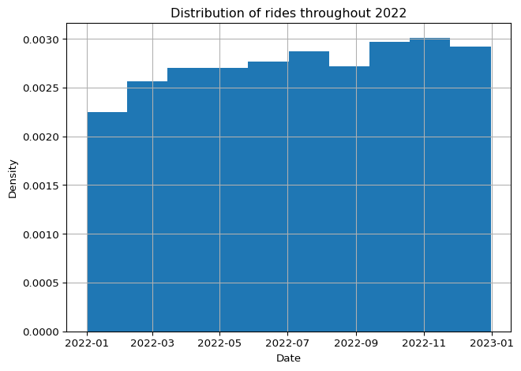
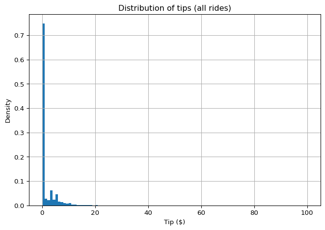
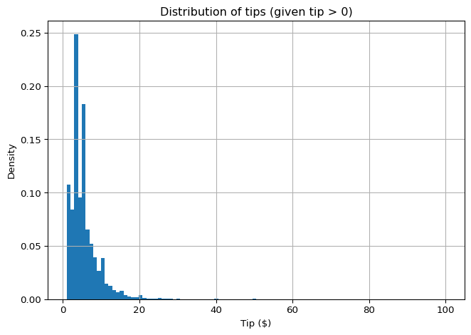

import pandas as pd
import matplotlib.pyplot as pltLab: Rideshare Exploratory Data Analysis
probability
In this lab you will apply probability, conditional probability, and distributions to a real-world dataset: rideshare trips in Chicago during 2022. You will explore how rides are distributed throughout the year, investigate tipping behavior, and compute conditional probabilities (such as the probability of receiving a tip given a specific day of the week).
Download the dataset: rideshare_2022.csv
Importing Libraries
Loading Data
The dataset contains rideshare trips from Chicago in 2022, downsampled by a factor of 100 from the original (which has hundreds of millions of rows).
df = pd.read_csv('../../media/rideshare_2022.csv', parse_dates=['Trip Start Timestamp', 'Trip End Timestamp'])
df.head()| Trip ID | Trip Start Timestamp | Trip End Timestamp | Trip Seconds | Trip Miles | Pickup Census Tract | Dropoff Census Tract | Pickup Community Area | Dropoff Community Area | Fare | ... | Trip Total | Shared Trip Authorized | Trips Pooled | Pickup Centroid Latitude | Pickup Centroid Longitude | Pickup Centroid Location | Dropoff Centroid Latitude | Dropoff Centroid Longitude | Dropoff Centroid Location | len_date | |
|---|---|---|---|---|---|---|---|---|---|---|---|---|---|---|---|---|---|---|---|---|---|
| 0 | 04767642defd6a3825d089ae66183906a89b902d | 2022-01-01 | 2022-01-01 01:15:00 | 3905.0 | 44.5 | 1.703104e+10 | NaN | 4.0 | NaN | 55.0 | ... | 66.25 | 0 | 1 | 41.972563 | -87.678846 | POINT (-87.6788459662 41.9725625375) | NaN | NaN | NaN | 16 |
| 1 | 138de88e19e045d9962f1f669e668f9dcdfbc9fd | 2022-01-01 | 2022-01-01 00:30:00 | 2299.0 | 25.0 | NaN | NaN | 32.0 | NaN | 32.5 | ... | 46.68 | 0 | 1 | 41.878866 | -87.625192 | POINT (-87.6251921424 41.8788655841) | NaN | NaN | NaN | 16 |
| 2 | 249cb7bc8eea309aaa3ef941756df4f62a53a92a | 2022-01-01 | 2022-01-01 00:00:00 | 275.0 | 1.5 | NaN | NaN | 40.0 | 38.0 | 7.5 | ... | 8.52 | 0 | 1 | 41.792357 | -87.617931 | POINT (-87.6179313803 41.7923572233) | 41.812949 | -87.617860 | POINT (-87.6178596758 41.8129489392) | 16 |
| 3 | 36c8a2a4cd85fb32ae32170550d2a4d30b8df8a1 | 2022-01-01 | 2022-01-01 00:15:00 | 243.0 | 1.0 | 1.703106e+10 | 1.703106e+10 | 6.0 | 6.0 | 5.0 | ... | 7.36 | 0 | 1 | 41.936310 | -87.651563 | POINT (-87.6515625922 41.9363101308) | 41.943155 | -87.640698 | POINT (-87.640698076 41.9431550855) | 16 |
| 4 | 493f7bbcba1d96bf10bd579fe1c4b7ddb95fd3a6 | 2022-01-01 | 2022-01-01 00:15:00 | 364.0 | 1.3 | 1.703107e+10 | 1.703106e+10 | 7.0 | 6.0 | 5.0 | ... | 7.36 | 0 | 1 | 41.921855 | -87.646211 | POINT (-87.6462109769 41.9218549112) | 41.936237 | -87.656412 | POINT (-87.6564115308 41.9362371791) | 16 |
5 rows × 22 columns
Exploring the Dataset
The dataset includes columns such as Trip ID, timestamps, trip duration, distance, fare, tip, and geographic coordinates. Run df.info() to see column types and missing values.
df.info()<class 'pandas.DataFrame'>
RangeIndex: 691098 entries, 0 to 691097
Data columns (total 22 columns):
# Column Non-Null Count Dtype
--- ------ -------------- -----
0 Trip ID 691098 non-null str
1 Trip Start Timestamp 691098 non-null datetime64[us]
2 Trip End Timestamp 691098 non-null datetime64[us]
3 Trip Seconds 691073 non-null float64
4 Trip Miles 691096 non-null float64
5 Pickup Census Tract 398943 non-null float64
6 Dropoff Census Tract 397574 non-null float64
7 Pickup Community Area 633092 non-null float64
8 Dropoff Community Area 630431 non-null float64
9 Fare 689952 non-null float64
10 Tip 689952 non-null float64
11 Additional Charges 689952 non-null float64
12 Trip Total 689952 non-null float64
13 Shared Trip Authorized 691098 non-null int64
14 Trips Pooled 691098 non-null int64
15 Pickup Centroid Latitude 635075 non-null float64
16 Pickup Centroid Longitude 635075 non-null float64
17 Pickup Centroid Location 635075 non-null str
18 Dropoff Centroid Latitude 632163 non-null float64
19 Dropoff Centroid Longitude 632163 non-null float64
20 Dropoff Centroid Location 632163 non-null str
21 len_date 691098 non-null int64
dtypes: datetime64[us](2), float64(14), int64(3), str(3)
memory usage: 116.0 MBSelecting Columns of Interest
For this analysis, we keep only the columns we need. This reduces memory usage and makes the DataFrame easier to work with.
columns_of_interest = ['Trip Start Timestamp', 'Trip Seconds',
'Trip Miles', 'Fare', 'Tip', 'Additional Charges', 'Trip Total', 'Shared Trip Authorized',
'Trips Pooled', 'Pickup Centroid Latitude', 'Pickup Centroid Longitude', 'Dropoff Centroid Latitude',
'Dropoff Centroid Longitude']
df = df[columns_of_interest]
# Rename columns: remove spaces, make lowercase
df = df.rename(columns={i: "_".join(i.split(" ")).lower() for i in df.columns})
df.info()<class 'pandas.DataFrame'>
RangeIndex: 691098 entries, 0 to 691097
Data columns (total 13 columns):
# Column Non-Null Count Dtype
--- ------ -------------- -----
0 trip_start_timestamp 691098 non-null datetime64[us]
1 trip_seconds 691073 non-null float64
2 trip_miles 691096 non-null float64
3 fare 689952 non-null float64
4 tip 689952 non-null float64
5 additional_charges 689952 non-null float64
6 trip_total 689952 non-null float64
7 shared_trip_authorized 691098 non-null int64
8 trips_pooled 691098 non-null int64
9 pickup_centroid_latitude 635075 non-null float64
10 pickup_centroid_longitude 635075 non-null float64
11 dropoff_centroid_latitude 632163 non-null float64
12 dropoff_centroid_longitude 632163 non-null float64
dtypes: datetime64[us](1), float64(10), int64(2)
memory usage: 68.5 MBVisualizing Distributions
Rides Throughout the Year
To understand how rides are distributed over time, we create a date column and plot a histogram. Setting density=True scales the histogram so the area equals 1, making it look like a probability density function.
df['date'] = pd.to_datetime(df['trip_start_timestamp'].dt.date)
df.hist('date', density=True)
plt.xlabel('Date')
plt.ylabel('Density')
plt.title('Distribution of rides throughout 2022')
plt.tight_layout()
plt.show()
The rides are roughly uniformly distributed throughout the year, with slight fluctuations. This is real-world data, so perfect uniformity is not expected.
Tip Distribution
df.hist('tip', density=True, bins=100)
plt.xlabel('Tip ($)')
plt.ylabel('Density')
plt.title('Distribution of tips (all rides)')
plt.tight_layout()
plt.show()
The large bar at tip = 0 dominates the plot. Most riders do not tip (remember, cash tips are not recorded). We can calculate the probability of tipping:
tippers = df['tip'] > 0
number_of_tippers = tippers.sum()
total_rides = len(df)
fraction_of_tippers = number_of_tippers / total_rides
print(f'The percentage of riders who tip is {fraction_of_tippers*100:.0f}%.')The percentage of riders who tip is 25%.Conditional Distribution: Tips Given a Tip Was Given
If we condition on the event that a tip was given (filter out non-tippers), the distribution changes shape entirely:
df_tippers = df[tippers]
df_tippers.hist('tip', density=True, bins=100)
plt.xlabel('Tip ($)')
plt.ylabel('Density')
plt.title('Distribution of tips (given tip > 0)')
plt.tight_layout()
plt.show()
This is a conditional distribution: the distribution of the tip amount, given that a tip was actually given. Mathematically, you are looking at \(P(\text{tip amount} \mid \text{tip} > 0)\).
Splitting Data Into Subsets: Conditional Probability
An interesting question: does tipping behavior change depending on the day of the week? This is a conditional probability question: \(P(\text{tip} \mid \text{weekday})\).
# Extract day of the week
df['weekday'] = df['date'].dt.day_name()
# Count rides per day
WEEKDAYS = ['Monday', 'Tuesday', 'Wednesday', 'Thursday', 'Friday', 'Saturday', 'Sunday']
daily_ride_counts = df['weekday'].value_counts().reindex(WEEKDAYS)
daily_ride_countsweekday
Monday 79013
Tuesday 82576
Wednesday 88034
Thursday 95721
Friday 115923
Saturday 132872
Sunday 96959
Name: count, dtype: int64# Count tippers per day
df_tippers = df[df['tip'] > 0]
daily_tippers_counts = df_tippers['weekday'].value_counts().reindex(WEEKDAYS)
daily_tippers_countsweekday
Monday 19779
Tuesday 20898
Wednesday 22691
Thursday 24210
Friday 29256
Saturday 33215
Sunday 23294
Name: count, dtype: int64# Calculate conditional probability of tipping given day of the week
df_daily = pd.concat([daily_ride_counts, daily_tippers_counts], axis=1, keys=['ride_count', 'tippers_count'])
df_daily['tips_percentage'] = df_daily['tippers_count'] / df_daily['ride_count'] * 100
df_daily| ride_count | tippers_count | tips_percentage | |
|---|---|---|---|
| weekday | |||
| Monday | 79013 | 19779 | 25.032590 |
| Tuesday | 82576 | 20898 | 25.307595 |
| Wednesday | 88034 | 22691 | 25.775269 |
| Thursday | 95721 | 24210 | 25.292256 |
| Friday | 115923 | 29256 | 25.237442 |
| Saturday | 132872 | 33215 | 24.997742 |
| Sunday | 96959 | 23294 | 24.024588 |
What you just calculated are conditional probabilities: \(P(\text{tip} \mid \text{weekday})\) for each day. You can see that Fridays and Saturdays have significantly more rides, but the tipping percentage stays fairly consistent across days.
Key Takeaways
- Ride dates follow a roughly uniform distribution throughout 2022.
- The raw tip distribution is dominated by zeros (most riders do not tip in the app).
- Conditioning on tip > 0 reveals a different shape entirely.
- Conditional probabilities \(P(\text{tip} \mid \text{day})\) show tipping rates are stable across weekdays despite varying ride volumes.
Congratulations on finishing this lab. You have applied probability, distributions, and conditional probability to a real-world dataset. In future weeks, you will continue exploring this rideshare data with more advanced statistical tools.